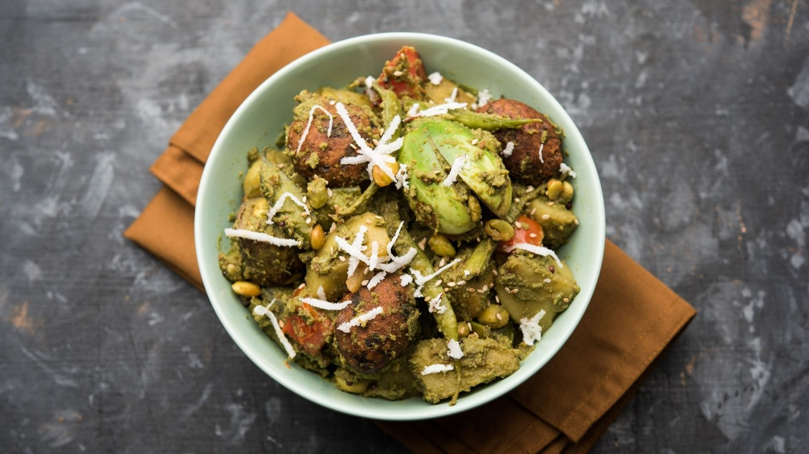

- Surati papdi (Valor papdi) - 1 cup, stringed and chopped
- Potatoes - 2, peeled and cubed
- Sweet potatoes - 1 small, peeled and cubed
- Eggplant (brinjal) - 1 small, cubed
- Raw bananas - 1 small, peeled and cubed
- Small baby potatoes - 4-6
- Fresh pigeon peas (tuvar dana) - 1/2 cup
- Fresh coconut, grated - 1/2 cup
- Ginger-green chili paste - 1 tablespoon
- Turmeric powder - 1/2 teaspoon
- Coriander-cumin powder - 1 tablespoon
- Garam masala powder - 1 teaspoon
- Sugar - 1 tablespoon
- Tamarind pulp - 2 tablespoons
- Salt - to taste
- Fresh coriander leaves - for garnish
- Oil - 4 tablespoons
|
- Prepare all the vegetables as mentioned and keep them ready.
- Heat oil in a large heavy-bottomed pan or a pressure cooker.
- Add ginger-green chili paste and sauté for a minute.
- Add all the cubed vegetables and fresh pigeon peas. Mix well.
- Add turmeric powder, coriander-cumin powder, garam masala powder, sugar, and salt. Mix well.
- Cover and cook on medium heat for 5 minutes.
- Add grated coconut and tamarind pulp. Mix well.
- If using a pressure cooker, close the lid and cook for 2 whistles. If using a pan, cover and cook until all vegetables are tender, stirring occasionally.
- Once done, check for seasoning and adjust if needed.
- Garnish with fresh coriander leaves.
- Serve hot with puri or roti. Enjoy!
|

|